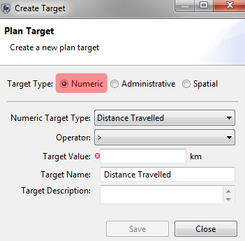
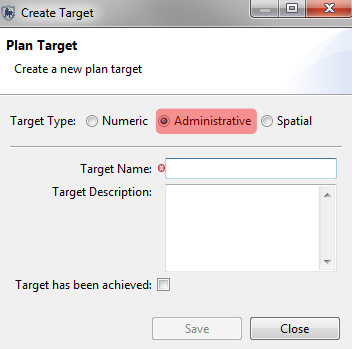
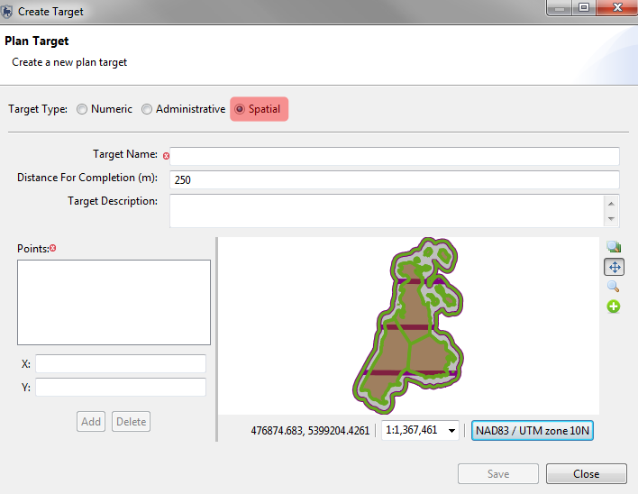
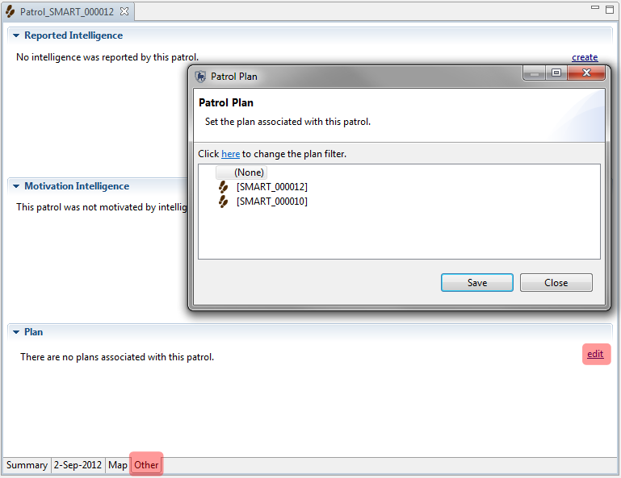
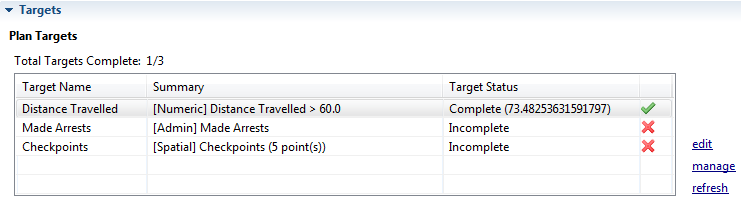

Planes SMART permiten que una serie de objetivos se asigne a un patrullaje o a una serie de patrullajes y permite tener en cuenta guardabosques disponibles y activos. Planes SMART pueden ser configurados en una relación padre-hijo donde un plan padre puede tener un número de planes hijos (planes secundarios) que son asociados con el padre. Planes son asignados a patrullajes, y cuando un patrullaje regresa del campo y los datos han sido ingresados al software, SMART validará automáticamente si los objetivos se han cumplido o no.
Un plan permite que los objetivos y las metas específicas que se asignan a un Área de Conservación, una estación, un equipo o una serie de patrullajes. Se crea un plan usando un asistente, parecido al asistente utilizado para crear patrullajes. Después que un plan se haya creado, se puede asociar con un patrullaje o una serie de patrullajes, luego se utiliza la información de los trayectos para calcular el éxito o el fracaso de los objetivos definidos.
Pasos para crear un plan
1. Plantilla - Crear un plan de cero o utilizar un plan existente como plantilla
2. Tipo de plan - Elige el tipo de plan (patrullaje, equipo, estación o Área de Conservación) y los guardaparques disponibles para el plan
3. Plan Principal - Selecciona si el plan es un sub-plan de otro plan o si se queda solo
4. Información del Plan - ID de plan, nombre y descripción
5. Estación / Equipo - Selección el equipo y la estación involucrados en el plan
6. Fechas de plan - selección de la fecha inicial y final del plan
7. Objetivos del Plan - Añadir metas y objetivos al plan
Tipos de objetivos y metas

Tipos de objetivos numéricos:


Pantalla de resumen del Plan
editar - edita el objetivo del plan seleccionado
manejar - abre un diálogo para añadir nuevos objetivos
Refrescar- refresca la validación de patrullajes asociados con estos objetivos
Después que se ha creado un plan, se puede asignar a un patrullaje o a varios patrullajes.
Vincular un patrullaje a un plan requiere que el usuario abra ese patrullaje específico en la perspectiva de patrullaje y haga clic en la pestaña "Otros" (parte inferior de la ventana).
A continuación, al hacer clic en el enlace Editar situado junto a la ventana del Plan se abrirá un diálogo para vincular el patrullaje activo con un plan.

Después que un patrullaje se ha relacionado con un plan, SMART puede validar los objetivos numericos y espaciales. Estos objetivos se validan con la información de los trayectos, por lo que si no hay información de trayectos ingresada, la validación de planes no será éxitoso.

Después que los patrullajes y los planes han sido vinculados, el usuario tendrá que hacer clic en el botón de actualización para ejecutar la validación. Cuando el objetivo ha sido exitosamente validado, el círculo rojo se vuelve verde. Esto se aplica a los objetivos numéricos y espaciales.
La validación de los objetivos administrativos es un proceso manual que requiere que el usuario seleccione y edite las metas Administrativas y haga clic en la casilla de verificación "Objetivo se ha logrado ".